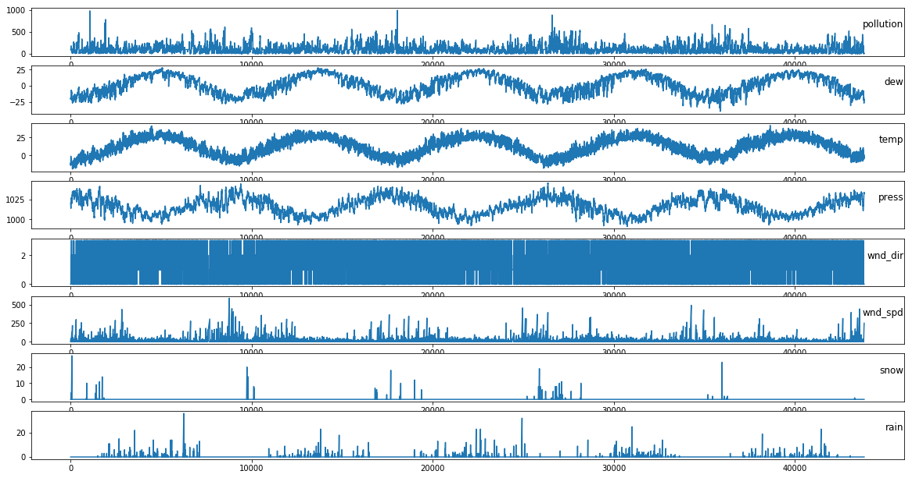
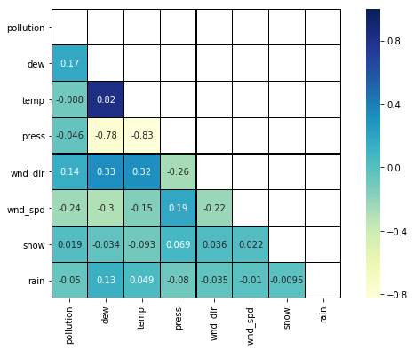

北京PM2.5相关性分析
import pandas as pd
import numpy as np
import matplotlib.pyplot as plt
import seaborn as sns
%matplotlib inline
加载原始数据
dataset = pd.read_csv('./dataset/beijing.csv')
dataset.head(5)
| No | year | month | day | hour | pm2.5 | DEWP | TEMP | PRES | cbwd | Iws | Is | Ir | |
|---|---|---|---|---|---|---|---|---|---|---|---|---|---|
| 0 | 1 | 2010 | 1 | 1 | 0 | NaN | -21 | -11.0 | 1021.0 | NW | 1.79 | 0 | 0 |
| 1 | 2 | 2010 | 1 | 1 | 1 | NaN | -21 | -12.0 | 1020.0 | NW | 4.92 | 0 | 0 |
| 2 | 3 | 2010 | 1 | 1 | 2 | NaN | -21 | -11.0 | 1019.0 | NW | 6.71 | 0 | 0 |
| 3 | 4 | 2010 | 1 | 1 | 3 | NaN | -21 | -14.0 | 1019.0 | NW | 9.84 | 0 | 0 |
| 4 | 5 | 2010 | 1 | 1 | 4 | NaN | -20 | -12.0 | 1018.0 | NW | 12.97 | 0 | 0 |
No: row number
year: year of data in this row
month: month of data in this row
day: day of data in this row
hour: hour of data in this row
pm2.5: PM2.5 concentration (ug/m^3)
DEWP: Dew Point (℃)
TEMP: Temperature (℃)
PRES: Pressure (hPa)
cbwd: Combined wind direction
Iws: Cumulated wind speed (m/s)
Is: Cumulated hours of snow
Ir: Cumulated hours of rain
数据清洗
dataset = pd.read_csv('./dataset/beijing.csv',header=0,parse_dates=[[1,2,3,4]],index_col=0,
date_parser=lambda date: pd.datetime.strptime(date,'%Y %m %d %H'))
dataset.drop('No',axis=1,inplace=True)
dataset.index.name='date'
dataset.columns = ['pollution', 'dew', 'temp', 'press', 'wnd_dir', 'wnd_spd', 'snow', 'rain']
dataset.head()
| pollution | dew | temp | press | wnd_dir | wnd_spd | snow | rain | |
|---|---|---|---|---|---|---|---|---|
| date | ||||||||
| 2010-01-01 00:00:00 | NaN | -21 | -11.0 | 1021.0 | NW | 1.79 | 0 | 0 |
| 2010-01-01 01:00:00 | NaN | -21 | -12.0 | 1020.0 | NW | 4.92 | 0 | 0 |
| 2010-01-01 02:00:00 | NaN | -21 | -11.0 | 1019.0 | NW | 6.71 | 0 | 0 |
| 2010-01-01 03:00:00 | NaN | -21 | -14.0 | 1019.0 | NW | 9.84 | 0 | 0 |
| 2010-01-01 04:00:00 | NaN | -20 | -12.0 | 1018.0 | NW | 12.97 | 0 | 0 |
pd.isnull(dataset).any()
pollution True
dew False
temp False
press False
wnd_dir False
wnd_spd False
snow False
rain False
dtype: bool
#缺失数据用平均值填充
dataset=dataset.fillna(dataset.mean()['pollution'],axis=1)
dataset.wnd_dir.unique()
array(['NW', 'cv', 'NE', 'SE'], dtype=object)
dataset.wnd_dir=dataset.wnd_dir.map({'NW':0,'cv':1,'NE':2,'SE':3})
保存数据清洗结果
dataset.to_csv('./dataset/beijing_pm25.csv')
加载数据
data_set = pd.read_csv('./dataset/beijing_pm25.csv')
series = data_set.iloc[:,1]
series_values=series.values.astype('float32')
plt.figure(figsize=(20,12))
for i in range(1,data_set.shape[1]):
plt.subplot(data_set.shape[1],1,i+1)
plt.plot(data_set.values[:,i])
plt.title(data_set.columns[i],y=0.5,loc='right')
plt.show()

相关性分析
corr_all = data_set.drop('date', axis = 1).corr()
mask = np.zeros_like(corr_all, dtype = np.bool)
mask[np.triu_indices_from(mask)] = True
f, ax = plt.subplots(figsize = (10, 6))
sns.heatmap(corr_all,mask = mask,linewidths=0.25,vmax=1.0, square=True,
cmap="YlGnBu", linecolor='black', annot=True)
plt.savefig('./Correlation_Analysis.pdf')
plt.show()

对于pm2.5来说没有看到比较强的相关指标
可以看到露水和温度呈现正相关特征
气压和露水呈现负相关特征
气压和温度呈现负相关特征